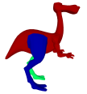
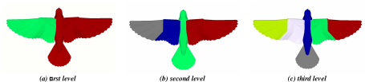
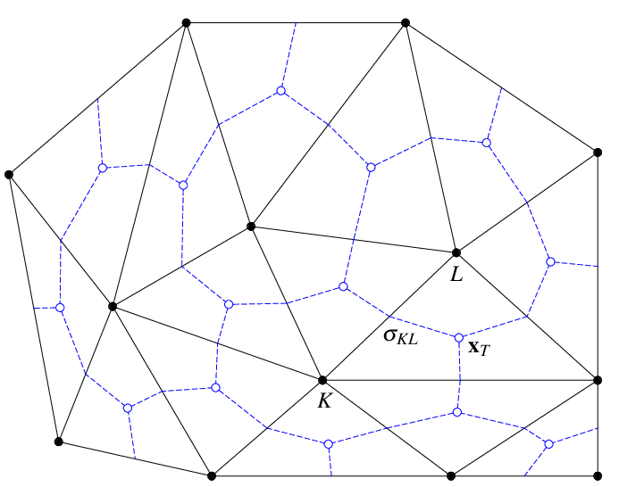
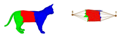

曹耕晨
2023-10-24
实现论文 Hierarchical Mesh Decomposition using Fuzzy Clustering and Cuts (Katz and Tal 2003) 中的网格分割算法
输入: 三角面片模型
输出: 分割后的模型 (PLY 格式), 面片的颜色表示 Patch id
语言: 不限定大家使用的编程语言.
根据实现效果在上述范围内调整分数, 有 bug 可能会扣分超过这个范围.
当面检查 + 提交到网络学堂.
检查时间: 考试周 (因为这学期只上 15 周课, 所以应该是 16 – 17 周), 具体时间请留意网络学堂通知.
检查要求: 展示程序运行结果, 讲解程序原理
提交截止时间: 考试周最后一天.
提交文件:
k 路分解: 将原网格 \(S\) 分解成 \(k\) 个片 \(S_1, S_2, \ldots, S_k\), 保证这些片每个都是连通的且互不相交

0-1 分解: 上述情况中 \(k = 2\) 的情况 (注意, 只是问题定义相同, 采用的算法是有区别的)
把前一层分解得到的每一片再次进行分解, 直接递归进行即可.

生成带权对偶图, 及任意两个面片的最短距离 \(\text{Dist}(f_{i}, f_{j})\).
递归得对于每一层执行:
具体的算法公式定义以及实现细节可以参考课堂 PPT 或原始论文 (会上传到网络学堂)
点变成面, 面变成点. 下图中黑色部分为原图, 蓝色部分为对偶图.

对于相邻的面片 \(f_{i}, f_{j}\), 分析
有很多种最短路径算法. 参见 https://oi-wiki.org/graph/shortest-path, 自己挑一种实现就行.
\[P(f_{i} \in S_{j}) = \frac{\text{Dist}(f_{i}, \text{REP}_{j})^{-1}}{\sum_{1 \leq l \leq j} \text{Dist}(f_{i}, \text{REP}_{l})^{-1}}\]
即面片 \(f_{i}\) 跟 \(\text{REP}_{j}\) 越近, 它属于片 \(S_{j}\) 的可能性越高.
0-1 分解的种子生成需要迭代多轮, 目标是最小化
\[\sum_{1 \leq j \leq 2} \sum_{i} P(f_{i} \in S_{j}) \text{Dist}(f_{i}, \text{REP}_{k})\]
这个公式的含义是最小化面片到种子距离的数学期望.
初始化两个种子为图上距离 (根据权值计算) 最远的两点.
迭代进行下列操作:
根据当前的两个种子计算概率
根据下方公式更新种子, 更新时认为 \(P(f_{i} \in S_{j})\) 是定值.
\[\begin{aligned} \text{REP}_{1} &= \mathop{\mathrm{arg\,min}}_{\text{REP}_{1}} \sum_{i} P(f_{i} \in S_{1}) \text{Dist}(f_{i}, \text{REP}_{1}) \\ \text{REP}_{2} &= \mathop{\mathrm{arg\,min}}_{\text{REP}_{2}} \sum_{i} P(f_{i} \in S_{2}) \text{Dist}(f_{i}, \text{REP}_{2}) \end{aligned}\]
如果种子位置发生改变, 则重复上述操作; 否则结束.
首先选一个距离所有面片距离和最小的面片. 之后的每一个种子 \(\text{REP}_{k}\) 的选择要最大化到之前种子 \(\text{REP}_{i}\) 的最小距离, 即
\[\text{REP}_{k} = \mathop{\mathrm{arg\,max}}_{\text{REP}_{k}} \min_{i < k} \text{Dist}(\text{REP}_{i}, \text{REP}_{k})\]
还剩一个问题是如何选取 \(k\)? 定义 \(G(k) := \min_{i < k} \text{Dist}(\text{REP}_{i}, \text{REP}_{k})\), 经过实验发现在某个 \(k\) 处 \(G(k)\) 会发生急剧的下降, 我们选取最大化 \(G(k) - G(k + 1)\) 的 \(k\).
如果一个面片 \(f_{i}\) 属于片 \(S_{j}\) 的概率大于 \(0.5 + \epsilon\), 就认为 \(f_{i}\) 属于 \(S_{j}\).
这样可以把所有面片分为三种: 属于片 \(S_{1}\), 属于片 \(S_{2}\) 以及模糊部分.
希望将模糊部分一分为二, 一半属于片 \(S_{1}\), 另一半属于片 \(S_{2}\).

我们规定切掉每条边的代价, 然后通过最小割算法来最小化这个代价.
具体来说, 我们找出与模糊区域相邻的清晰面片集合 \(A_{1}, A_{2}\), \(A_{1}\) 被包含于片 \(S_{1}\), \(A_{2}\) 被包含于片 \(S_{2}\). 将 \(A_{1}\) 与源点 \(S\) 连接, 将 \(A_{2}\) 与汇点 \(T\) 连接, 然后规定一些代价 \(C_{i, j}\)
\[C_{i, j} = \begin{cases} \frac{1}{1 + \frac{\text{Ang\_Dist}(\alpha_{ij})}{\text{avg}(\text{Ang\_Dist})}} & i, j \neq S, T \\ \infty & \text{otherwise} \end{cases}\]
希望切到的边的代价之和最小.
最大流最小割定理: 最大流等于最小割.
把代价看成边 \(C_{i, j}\) 之间允许的最大流量, 如果求得了从 \(S\) 到 \(T\) 的最大流量, 那么满流量的边构成了一个最小割 (这个说法不严谨, 但大概能这么理解).
(这部分原论文一笔带过, 掺杂了个人理解, 仅供参考)
递归进行 0-1 分解/ k 路分解即可, 递归时注意进行终止条件判断:
PLY 是一种几何体图形文件格式, 开头描述文件排布及数据属性, 之后每一行表示一个元素 (点, 线, 面). 例如:
ply
format ascii 1.0
comment 这是一个正四面体
element vertex 4
property float x
property float y
property float z
element face 4
property list uchar int vertex_index
end_header
0 3 0
2.449 -1.0 -1.414
0 -1 2.828
-2.449 -1.0 -1.414
3 0 1 3
3 0 2 1
3 0 3 2
3 1 2 3用第三方库也可以, 手写也可以. 可以考虑的第三方库有 (不限于这些):
如果手写, 实现一个乞丐版 PLY 文件解析就行, 只需要处理顶点跟面的读入. 解析一下有多少个顶点, drop 掉开头的其余部分, 然后直接读就行.
能查看 PLY 文件的软件:
可以在下面几个地方寻找网格模型:
0-1 路分解种子生成这个算法不一定收敛 (我没证出来收敛性), 建议设置一个迭代次数上界. 如果你们证出来了可以写到实验报告里, 酌情加分.
这部分如果采用 k 路分解, 可能会遇到一些奇怪的边界情况导致生成的同一片 \(S_{j}\) 不连通之类的 (我没证出来这种情况不存在), 这一块我也没有解决办法. 解决不了不要死磕 (当然前提是你排除了 bug 这种因素), 这只是一个单纯的大作业.
我用奔腾 10 代处理器来跑 k 路层次化分解, 四千多个面片 (兔子模型) 需要 25 秒. 最后别当面检查的时候一跑跑半天就行.